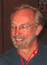
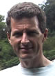
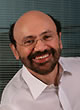

Search goes mobile
April 28-30
University Residential Center
Bertinoro (Forlì-Cesena), Italy
Mobile devices are expected to become soon the preferred mode of interaction with the internet.
This workshop has a mixed emphasis-- top executives from leading companies of the search and telecom worlds
will offer their vision of the future, while researchers from both industry and academia will focus on
challenges and opportunities that lie ahead.
University Residential Center
Bertinoro (Forlì-Cesena), Italy
Keynotes: Challenges and opportunities of a moving market
Usama Fayyad - Executive Vice President of Research & Strategic Data Solutions, Yahoo!Dr. Usama Fayyad is Yahoo!'s executive vice president of Research & Strategic Data Solutions. Fayyad is responsible for Yahoo!'s overall data strategy, data investments, and data processing infrastructure. Prior to joining Yahoo!, Fayyad co-founded and led the DMX Group, a data mining and data strategy consulting company. In early 2000, he co-founded and served as CEO of digiMine Inc. (now Revenue Science, Inc.). His professional experience includes five years spent at Microsoft Research. From 1989 to 1996 Fayyad also held a leadership role at NASA's Jet Propulsion Laboratory (JPL) where his work garnered him the top research excellence award that Caltech awards to JPL scientists, as well as a U.S. Government medal from NASA. Fayyad earned a Ph.D. in engineering from the University of Michigan, Ann Arbor (1991). He has published over 100 technical articles in the fields of data mining and Artificial Intelligence.

John Gage - Chief Researcher & Vice President of the Science Office, SUNJohn Gage is responsible for Sun's relationships with scientific and technical organizations, and for governmental relations. In 1995 he created NetDay, a project that coordinated 500,000 volunteers to give Internet access to over 50,000 schools and libraries in the United States. For his work on NetDay, Gage was awarded in 1998 the ACM Presidential Award by Chuck House, the President of the ACM. In 1999 he received the Smithsonian Institute Leadership Award. In the same year, President Clinton appointed him to his Web Based Education Commission. Gage did doctoral work in mathematics and economics at the University of California, Berkeley, which he left in 1982 to join Bill Joy at Sun Microsystems as one of the original employees of the company. Gage has served on scientific advisory panels for the US National Research Council, the National Academy of Sciences, and the Multimedia Super Corridor project of Malaysia.
Hans-Christian Haugli - Senior Vice President and Head, Telenor R&IHans-Christian Haugli has a degree in electrical engineering from the University of Trondheim. He worked at the European Space Agency (ESA), where he was in charge of R&D activities and of the development of Inmarsat Standard C and Inmarsat M (digital speech terminal). He left ESA to join Vistar Telecommunications in Canada, a world leader in mobile satellite communications, to become that company's CTO. He left Vistar to become CTO of BudiLinks, a company he is the co-founder of. At BudiLinks he developed insert-cards/data chips that combine WLAN technology and narrow band radio technology to increase the area of coverage for available services and improve battery capacity. In 2004, he joined Telenor.

David Maguire - Director of Products and International, ESRIDavid Maguire is a member of ESRI's senior management team. He joined ESRI in 1990, and moved to ESRI's Redlands headquarters in 1997. In the past decade Dr Maguire has provided leadership for ESRI products, solutions and International business activities. Presently he leads ESRI's science and technology strategy and is responsible for all ESRI activities outside the USA. Additionally, Dr Maguire is the Special Assistant to the President, at the University of Redlands. He is the author/editor of more than 10 books, and approximately 100 publications on GIS. Dr Maguire has a PhD in Geography from the University of Bristol.
Keynotes: (Re)search goes mobile

Andrei Broder - Vice President for Computational Advertising, Yahoo! ResearchAndrei Broder is a Yahoo! Research Fellow and Vice President for Computational Advertising. Previously he was an IBM Distinguished Engineer and the CTO of the Institute for Search and Text Analysis in IBM Research. From 1999 until early 2002 he was Vice President for Research and Chief Scientist at the AltaVista Company. Before that he has been a senior member of the research staff at Compaq's Systems Research Center in Palo Alto. He was graduated Summa cum Laude from Technion, the Israeli Institute of Technology, and obtained his M.Sc. and Ph.D. in Computer Science at Stanford University under Don Knuth. Broder is co-winner of the Best Paper award at WWW6 (for his work on duplicate elimination of web pages) and at WWW9 (for his work on mapping the web). He has published more than seventy papers and was awarded twenty patents. He is an IEEE fellow and served as chair of the IEEE Technical Committee on Mathematical Foundations of Computing.